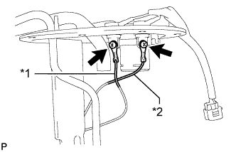

ДАТЧИК УРОВНЯ ТОПЛИВА В СБОРЕ (для моделей с двойным баком) > УСТАНОВКА |
| 1. УСТАНОВИТЕ ДАТЧИК УРОВНЯ ТОПЛИВА В СБОРЕ (для главного топливного бака) |
 |
Установите датчик уровня топлива на расширительный топливный бачок. Затем сдвиньте датчик уровня топлива вниз, чтобы установить его.
| *1 | Расширительный топливный бачок |
 | Сдвиньте |
Подсоедините разъем датчика уровня топлива.
| 2. УСТАНОВИТЕ ДАТЧИК УРОВНЯ ТОПЛИВА В СБОРЕ (для расширительного топливного бачка) |
 |
Установите датчик уровня топлива на опору датчика уровня топлива. Затем сдвиньте датчик уровня топлива верх, чтобы установить его.
| *1 | Опора датчика уровня топлива |
| Продольное перемещение |
|  |
Установите 2 вывода и закрепите их 2 винтами.
| *1 | Вывод (черный) |
| *2 | Вывод (красный) |
| 3. УСТАНОВИТЕ ТОПЛИВОЗАБОРНИК С БЕНЗОНАСОСОМ И ДАТЧИКОМ УРОВНЯ ТОПЛИВА В СБОРЕ (к главному топливному баку) |
Установите топливозаборник с бензонасосом и датчиком уровня топлива в сборе (Нажмите здесь).
| 4. УСТАНОВИТЕ ПРОДУВОЧНЫЙ ПАТРУБОК ТОПЛИВНОГО БАКА В СБОРЕ (для расширительного топливного бачка) |
Установите продувочный патрубок топливного бака в сборе (Нажмите здесь).